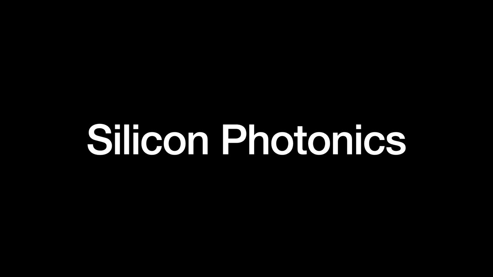
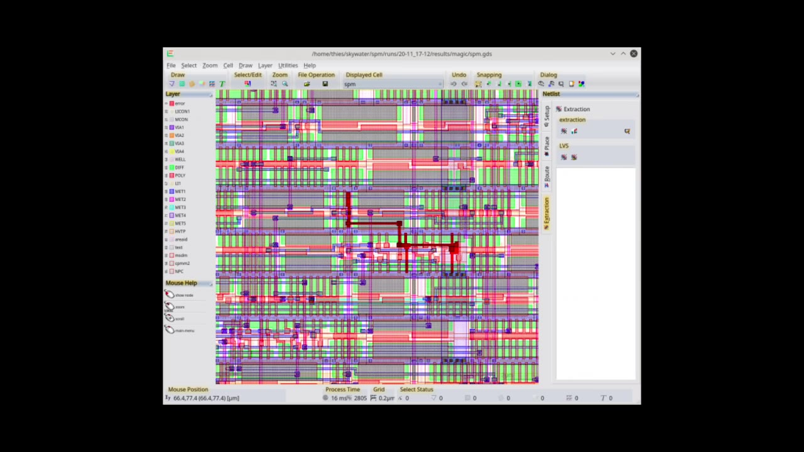
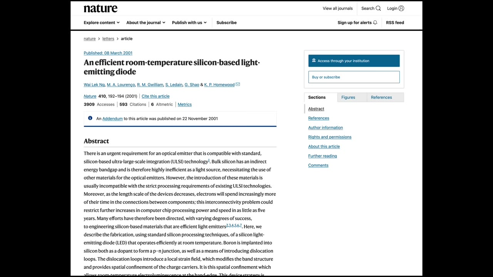
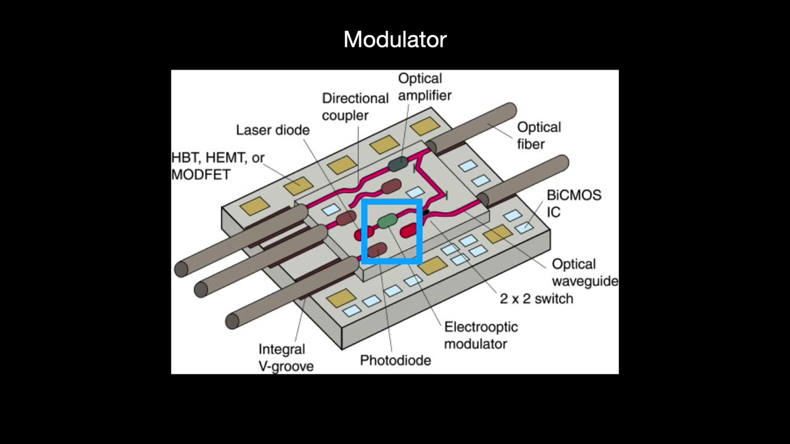
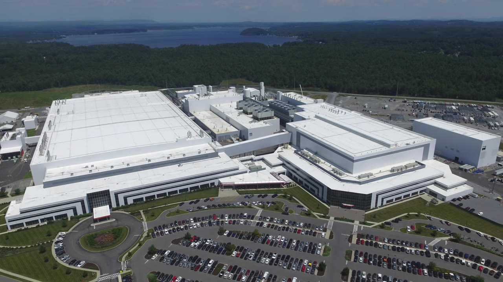
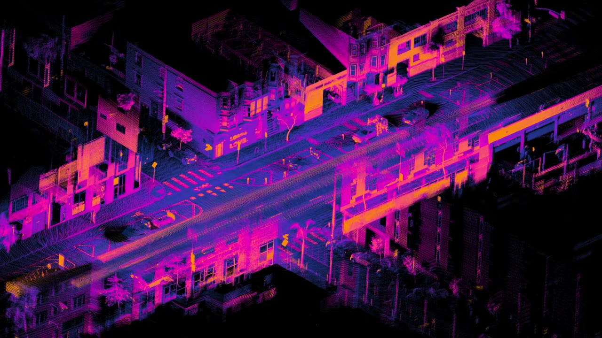
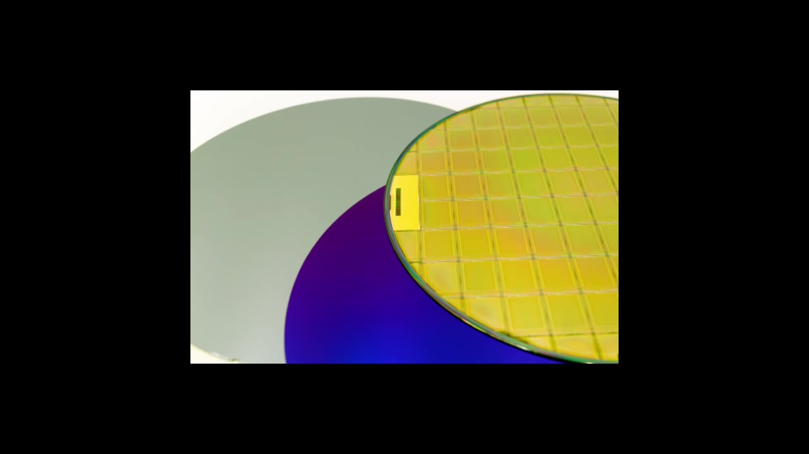
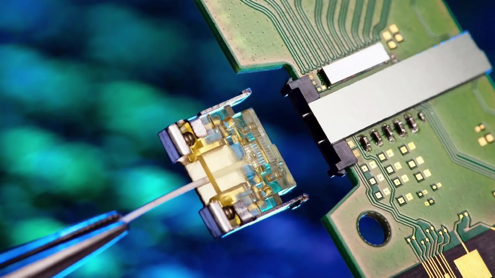

Silicon is the backbone of modern electronics — but it can't emit light. Engineers have spent decades trying to make it do both. This is the story of silicon photonics: the technology that wants to replace copper with light, inside your chip.
Watch on YouTubePhotonics is the science of manipulating light — photons — for practical use. In the context of silicon photonics, it means transmitting and manipulating data as light rather than electricity.
The idea has decades of precedent. By the 1990s, networking companies had already revolutionized long-distance communications by switching from copper wire to optical fiber. Light travels at the speed of light, supports massive bandwidth, and carries multiple signals simultaneously on different wavelengths. Over 2 billion kilometers of optical fiber have been deployed worldwide — enough to wrap the Earth more than 50,000 times.

The dream was simple: apply the titanic scale of CMOS manufacturing — with all its EDA tools, PDKs, and processes — to the photonics world. Replace the copper wires and electrons that connect transistors on a chip with optical fibers and light.
What if you were to replace those wires and electrons with optical fibers and light?— Speaker
A complete silicon photonics system requires five components — and they're not easy to make in silicon:

These components work together in a transceiver — a device at each end of an optical cable that converts light data to electrical data and back again. In data centers, transceivers sit at the top of each server rack, plugged into the switchgear.
Here's the rub: silicon has two fundamental physics problems that make it a poor choice for light-based components.
Problem 1 — Silicon can't emit light. Crystalline silicon has what's called an indirect bandgap, which prevents it from being used for LEDs or lasers. Without lazing, you can't make light with pure silicon. Researchers have modified silicon structures (implanting boron, for instance) to create silicon-based LEDs, but commercial silicon lasers remain elusive.

Problem 2 — Silicon doesn't exhibit the Pockels effect. The Pockels effect lets you use an electric field to control a material's refractive index — in other words, to control how fast light travels through it. Lasers lase continuously; the modulator's job is to convert that continuous beam into a digital 1-or-0 signal by absorbing or passing light. Without the Pockels effect, silicon can't modulate light electrically. No modulator.
The silicon-based laser is considered the holy grail of the silicon photonics space, the final piece of the puzzle.— Speaker
The industry didn't give up. Early optics researchers worked with other materials — gallium arsenide and indium phosphide — and made great progress. Then in the mid-1980s, Richard Soref showed that silicon could be manipulated to adjust its refractive index, kickstarting the silicon photonics industry.
By 2004, Intel announced the first silicon-based high-speed optical modulator (over 1 GHz bandwidth) using a Mach–Zehnder interferometer (MZI). Then in 2012, Intel unveiled the first fully integrated CMOS silicon photonics transceiver — four channels at 25 gigabits per second each, fabricated in a 90 nm process.

Instead of a pure silicon laser, the pragmatic workaround was to use an external laser positioned outside the chip (which also helps keep the chip cool) or to bond a pre-made laser made from a different material — a technique called hybrid integration.
Silicon photonics found its first big market inside the data center.
Hyperscalers — Alibaba, AWS, Google, Microsoft — spend tens of billions per year building gigantic data centers. The data flowing between servers inside a single hyperscaler data center exceeds the total volume of the entire U.S. public internet.
There is more data transmitting between a couple hundred servers within a single hyperscaler data center than what goes between the east and west halves of the United States public internet.— Speaker
With silicon photonics, transceiver functionality integrates right onto the chip, replacing legacy components. This saves cost, power, and labor while cracking a bandwidth bottleneck. Companies like Intel, Cisco, and Macom are now selling millions of units a year.

Silicon photonics also has major potential in LiDAR — light-based 3D sensing for autonomous vehicles. LiDAR uses light waves (which are much smaller than radio waves) to acquire high-resolution 3D maps of the environment.

Traditional LiDAR systems cost up to $70,000 and are bulky. A silicon photonics-based LiDAR could integrate many discrete optical components onto a single chip, drastically reducing cost and size.
Silicon photonics chips use silicon-on-insulator (SOI) wafers — silicon layers with special dielectric layers whose contrasting refractive indices confine light. This requires a fab process about two years behind leading-edge nodes, making it a specialty space.

The major players:
For TSMC, the juice isn't worth the squeeze.— Speaker
Here's the uncomfortable truth: even if silicon photonics takes over all data center and LiDAR markets, the total market is smaller than you'd expect.
A market research publication estimates 50–75 million transceiver units sold annually over the next few years. On a 200 mm SOI wafer with a 25 mm² die and 100% yield, that's only 40–60,000 wafers for the entire industry — less than a month's production for a typical megafab.

There's also a fundamental scaling challenge: modern transistors are at a few nanometers, but photonic components can't be smaller than the wavelength of light they carry — about 1 micrometer. At the 7 nm node, one square micrometer can house over 100 transistors. The opportunity cost of dedicating that real estate to photonics is enormous.